03.31.2010 15:26
Debugging AIS AtoNs
This week, Ted Reed from Ohmex paid a
visit to CCOM. We spent some time trying to debug why we could not
receive messages from an Ohmex TideMet AIS AtoN
station on our test bench. We tried a lot of combinations and
without proper RF test gear (which we do not own), it is hard to
know what is going on. The LED on the TideMet said it was
transmitting, but we did not receive anything. After exploring all
the options we could think of, we tore down the test setup and
moved it to our highbay. Right off it worked. We figured out after
some more testing that we had two fatal problems on our test bench.
First, the power supply we were using said that it could handle the
TideMet, but it definitely can not handle the brief peak loads. We
switched to a battery pack and a different (more robust) power
supply and it worked like a champ. The 2nd problem was the roof of
our building. GPS reception from the roof is great, but the
building construction almost totally blocks any signals from
getting down to the test area and we may also have a lot of noise
in the test area. To compound all of this, the AIS ATON
specifications makes it a challenge to work with type approved
devices. There are a lot of restrictions placed on how the units
work that make debugging difficult.
Here is our test setup. I had my Mac with an SR162g (a very wimpy AIS receiver), goSerial, and my python based serial logging and AIS decoding software. Ted had the Ohmex monitoring and display software on his laptop with a very cool USB powered Ohmex AIS receiver. Next to the laptops are a L3 stock AIS AtoN and a Ohmex TideMet.
For those who don't have one, here is what the L3 board configuration looks like (on port P2), when you press "c":
Watch out when writing decoders for Msg 21, as the message might contain a "Name of Aid-to-Navigation Extension" of up to 14 characters at the end. The L3 and Ohmex units do not use this extension, but GPSD's test dataset has a message that comes with an extension. Also, ITU 1371 Rev 3 changed the 3 spare bits in revision 1 to be two flags (virtual aton and assigned mode) and 1 spare.
Here is our test setup. I had my Mac with an SR162g (a very wimpy AIS receiver), goSerial, and my python based serial logging and AIS decoding software. Ted had the Ohmex monitoring and display software on his laptop with a very cool USB powered Ohmex AIS receiver. Next to the laptops are a L3 stock AIS AtoN and a Ohmex TideMet.
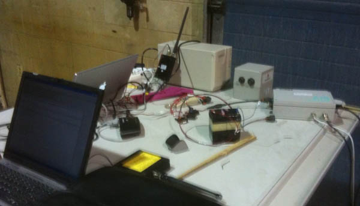
For those who don't have one, here is what the L3 board configuration looks like (on port P2), when you press "c":
L3 AT91 AtoN Project, [Rev 1.15J of 21-Aug-08] *** System Time: 000:01:03.128 *** *** System Configuration Menu *** 1. Show Current Configuration Info 2. Set Unit MMSI 3. Set Configured Lat and Lon 4. Show Current Transmit Schedule 5. Create New Transmit Schedule 6. Set Attributes for Scheduled Binary Msg Types 7. Set System Startup Time (following Standby) 8. Enable or Disable 62320-2 FDIS Mode 9. Enable or Disable Standby Operation a. Enable or Disable Acquisition Subsystem Control b. Enable or Disable SART Relay Feature c. Set SART Relay Mode Parameters d. Enable or Disable DGNSS Serial Input e. Enable or Disable Message 17 Transmit f. Enable or Disable Off Position Algorithm g. Set Tx Test Mode ParametersAnd here is what the unit looks like in the test configuration using my test MMSI.
Software [Rev 1.15J of 21-Aug-08] *** AtoN Configuration is [L3 Communications Type 3] *** Serial Number is [000xxxxxx] *** MMSI [338040883], Base Station MMSI [0] *** AtoN Name is [UNH_OHMEX] *** Configured Lat/Lon [43 8.1320 N, 70 56.3690 W] *** Base Startup Time is [10] Secs *** Receiver Operation is [Enabled] *** RATDMA Support is [Enabled] *** Standby Operation is [Disabled] *** Acquisition Subsystem Ctl is [Enabled] *** SART Relay Feature is [Disabled] *** DGNSS Input is [Disabled] *** Message 17 Transmit is [Disabled] *** IEC 62320-2 Sentence Mode is [FDIS] *** Off Position Algorithm is [Disabled] *** Flash/SDRAM CheckSums [7928, 7928] *** Code/Data Size [238149, 0x0003A245] BytesAs the unit boots up, I get this stream of NMEA:
!ANVDO,1,1,,X,E52HH<h:W4?WT6Rd00000000000=M`Oe<Ema@00000bP20,4*72 !ANVDO,1,1,,X,E52HH<h:W4?WT6Rd00000000000MM`Og<Em`800000g020,4*1C !ANVDM,1,1,,B,39NS7FE001rsr8hHbdnadIdP0000,0*4B ... !ANVDO,1,1,,Y,E52HH<h:W4?WT6Rd00000000000MM`Os<EmVP00000TP20,4*04 !ANVDO,1,1,,A,E52HH<h:W4?WT6Rd00000000000MM`On<EmVh00000uP20,4*18The first messages with ',X,' say that the device is booting up. There is an AIS position message in there (',B,3'). Then, once the unit is up with a good GPS fix, it starts putting out ',Y,' messages. When it transmits, it replaces the Y with an A or B to denote which channel it just transmitted on. Here is one of the messages that I received being decoded by my noaadata package:
ais_msg_21.py -d '!AIVDM,1,1,,A,E52HH<h:W4?WT6Rd00000000000MM`OJ<Emc@00000uP20,4*24,1269951900.77'
AidsToNavReport:
MessageID: 21
RepeatIndicator: 0
UserID: 338040883
type: 0
name: UNH-OHMEX
PositionAccuracy: 1
longitude: -70.93937
latitude: 43.1357233
dim: 0
FixType: 1
timestamp: 59
OffPosition: False
RegionalApp: 0
RAIM: True
virtual_aton_flag: False
assigned_mode_flag: False
spare: 0
extended_name:
Or in a HTML table view with LUT values:| Field Name | Type | Value | Value in Lookup Table | Units |
|---|---|---|---|---|
| MessageID | uint | 21 | 21 | |
| RepeatIndicator | uint | 0 | default | |
| UserID | uint | 338040883 | 338040883 | |
| type | uint | 0 | Default, Type of A to N not specified | |
| name | aisstr6 | UNH-OHMEX@@@@@@@@@@@ | UNH-OHMEX | |
| PositionAccuracy | uint | 1 | high (less than 10 m) | |
| longitude | decimal | -70.93937 | -70.93937 | degrees |
| latitude | decimal | 43.135723333 | 43.135723333 | degrees |
| dim | uint | 0 | 0 | |
| FixType | uint | 1 | GPS | |
| timestamp | uint | 59 | Missing LUT entry | |
| OffPosition | bool | False | On position | |
| RegionalApp | uint | 0 | 0 | |
| RAIM | bool | True | in use | |
| virtual_aton_flag | bool | False | Unit physically exists | |
| assigned_mode_flag | bool | False | autonomous and continuous mode | |
| spare | uint | 0 | 0 |
Watch out when writing decoders for Msg 21, as the message might contain a "Name of Aid-to-Navigation Extension" of up to 14 characters at the end. The L3 and Ohmex units do not use this extension, but GPSD's test dataset has a message that comes with an extension. Also, ITU 1371 Rev 3 changed the 3 spare bits in revision 1 to be two flags (virtual aton and assigned mode) and 1 spare.
03.31.2010 14:28
sioseis in fink on the mac!
A couple of weeks ago, Paul Henkart
was at CCOM for a meeting. We got to talking about his SIOSEIS seismic processing software.
We decided to team up to get it into fink. After a couple of
iterations, Paul has SIOSEIS setup to be a snap to package in fink
and SIOSEIS has a BSD license. I've got it working on 10.5 (Intel
and PPC) and 10.5 (32 and 64bit).
fink selfupdate fink install sioseisI would be interested in hearing if people see speedups now that sioseis is being built with more optimizations in gcc and gfortran enabled. Right now, it has these compiler flags:
-O2 -funroll-loops -fexpensive-optimizations -ffast-math
03.28.2010 18:36
AIS release - what were they thinking?
When you create a public
broadcast system, it is by definition public. Statements like
this are pretty useless. Anyone with a receiver can get this
message traffic. I think this is from 2005 or 2006. And these are
really transmitters, not transponders.
IMO on AIS transponders
IMO on AIS transponders
... Maritime security - AIS ship data At its 79th session in December 2004, the Maritime Safety Committee (MSC) agreed that, in relation to the issue of freely available automatic information system (AIS)-generated ship data on the world-wide web, the publication on the world-wide web or elsewhere of AIS data transmitted by ships could be detrimental to the safety and security of ships and port facilities and was undermining the efforts of the Organization and its Member States to enhance the safety of navigation and security in the international maritime transport sector. The Committee condemned the regrettable publication on the world-wide web, or elsewhere, of AIS data transmitted by ships and urged Member Governments, subject to the provisions of their national laws, to discourage those who make available AIS data to others for publication on the world-wide web, or elsewhere from doing so. In addition, the Committee condemned those who irresponsibly publish AIS data transmitted by ships on the world-wide web, or elsewhere, particularly if they offer services to the shipping and port industries. ...
03.25.2010 19:00
SONS 2010 wrap up
Update 2010-Mar-29: Michele
sent me a correction on WebEOC and let me know that 65 people at
SONS had ERMA accounts. I have a SONS Delicious tag that has
all of my bookmarks related the drill. CascoBayBoaters
has an excellent set of
photos from the field on Day 2.
SONS 2010 was just a one day event for me. My goal was to get a sense of how the command center for an oil spill would actually work. It was a fantastic learning experience. It looked like the social communications aspect of spill response was the big benefit from the drill for the participants. Having people know each other from these events will have tremendous payback during actual events. Just for myself, I am starting to recognize more people from the NOAA and FEMA teams. This visit was especially good for me because I can compare and contrast to what I've seen visiting the Napa/Sonoma Air Attack stations for fires and NASA mission control centers (e.g. Last week's phoenix press conference [2008-06], Blast Off!, ORT4 is done). I would equate this exercise to an Operational Readiness Test (ORT) for a NASA Mission.
However, I have to be careful with my conclusions, as it is clear that this drill is pretty far away from how an actual response might happen. Much of what I am used to is real AIS and environmental data that is pretty challenging to simulate and the there were different data sets for different groups to allow everyone to participate. For example, winds were tailored for the oil movement simulations to push the oil down to NH and get it into the Seabrook power plant intakes, but that wind would have prevented skimmers from acting. The skimmer planners were given wind profiles that let them "send out" skimmers.
AIS was particularly challenging. In the event of a real event, I could have broken out Aldebaran and shown real time data with live ships and whale detections. Put that up on a big projector and suddenly everyone would have a big boost in their MDA (maritime domain awareness). ERMA would have shown live ships too. After the fact, I can see from the photos at gCaptain that there were indeed vessels out doing simulated response work, specifically the Maine Responder, but their AIS is not properly configured for the vessel size and they have too many spaces in the name (not as big a deal as the dimensions).
These are possible USCG vessels involved, but I don't see the USCG vessesl that I know were involved: 65609, 554, and Shackle.
It also did not help that I don't have access to the WebEOC (by ESI system that contained many messages going between the teams. Just standing in the middle of the room with 200 people in it, I hardly had any idea what is going on. There are a few status printouts on a wall up front, but not many people look at them. There were a lot of paper notes and 8.5x11" maps being passed around. There were confusions about names of places in the field that made finding the place hard. I ended up contributing a little to the exercise (despite my observer roll - should have been doing nothing): using the USGS GNIS and Google Earth to find locations for the GIS technicians and to put up ERMA displays on one of the two dynamic displays in the whole room when Michele was in the midst of ArcGIS processing. The other one was being run by Amy who was also showing ERMA displays.
I had a strange conversation with Navy guys at the event. I showed them the AIS display in ERMA and talked about N-AIS. They love AIS for their work, but were unaware of N-AIS or MISLE. They had only used commercial services to track vessels. We really should get N-AIS into daily government use so that in times of crisis, people aren't learning about things for the first time and they already have a built in intuitive understanding of the capabilities of systems.
Observations:
This is one of the screens that I put up from ERMA that shows the area of observed oil from an "over flight" and both an early vessel exclusion area and a later exclusion area that banned non-responder traffic from a huge area. These exclusion areas would be great things to send out using AIS binary messages using the Zone Message (other than the overly complicated geometry, which would take too many bits).
SONS 2010 was just a one day event for me. My goal was to get a sense of how the command center for an oil spill would actually work. It was a fantastic learning experience. It looked like the social communications aspect of spill response was the big benefit from the drill for the participants. Having people know each other from these events will have tremendous payback during actual events. Just for myself, I am starting to recognize more people from the NOAA and FEMA teams. This visit was especially good for me because I can compare and contrast to what I've seen visiting the Napa/Sonoma Air Attack stations for fires and NASA mission control centers (e.g. Last week's phoenix press conference [2008-06], Blast Off!, ORT4 is done). I would equate this exercise to an Operational Readiness Test (ORT) for a NASA Mission.
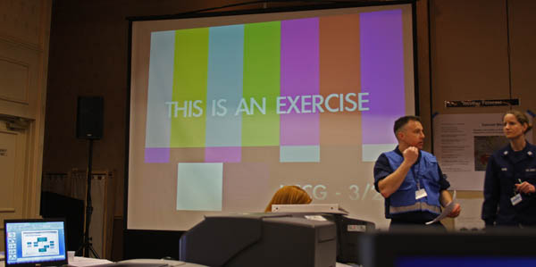
However, I have to be careful with my conclusions, as it is clear that this drill is pretty far away from how an actual response might happen. Much of what I am used to is real AIS and environmental data that is pretty challenging to simulate and the there were different data sets for different groups to allow everyone to participate. For example, winds were tailored for the oil movement simulations to push the oil down to NH and get it into the Seabrook power plant intakes, but that wind would have prevented skimmers from acting. The skimmer planners were given wind profiles that let them "send out" skimmers.
AIS was particularly challenging. In the event of a real event, I could have broken out Aldebaran and shown real time data with live ships and whale detections. Put that up on a big projector and suddenly everyone would have a big boost in their MDA (maritime domain awareness). ERMA would have shown live ships too. After the fact, I can see from the photos at gCaptain that there were indeed vessels out doing simulated response work, specifically the Maine Responder, but their AIS is not properly configured for the vessel size and they have too many spaces in the name (not as big a deal as the dimensions).
| mmsi | imonumber | callsign | name | dima | dimb | dimc | dimd |
| 366599000 | 9043902 | WBO8583 | MAINE RESPONDER | 0 | 0 | 0 | 0 |
These are possible USCG vessels involved, but I don't see the USCG vessesl that I know were involved: 65609, 554, and Shackle.
| COAST GUARD 902 | COAST GUARD 906 | COAST GUARD 907 | COAST GUARD 908 | COAST GUARD 909 |
| GUARDIAN SPIRIT | GUARDIAN LEADER | NRC GUARDIAN | U S COAST GUARD 905 | USCG 41321 |
| USCG 41411 | USCG PENDANT 65608 | USCG-THUNDER BAY | USCGC EAGLE |
It also did not help that I don't have access to the WebEOC (by ESI system that contained many messages going between the teams. Just standing in the middle of the room with 200 people in it, I hardly had any idea what is going on. There are a few status printouts on a wall up front, but not many people look at them. There were a lot of paper notes and 8.5x11" maps being passed around. There were confusions about names of places in the field that made finding the place hard. I ended up contributing a little to the exercise (despite my observer roll - should have been doing nothing): using the USGS GNIS and Google Earth to find locations for the GIS technicians and to put up ERMA displays on one of the two dynamic displays in the whole room when Michele was in the midst of ArcGIS processing. The other one was being run by Amy who was also showing ERMA displays.
I had a strange conversation with Navy guys at the event. I showed them the AIS display in ERMA and talked about N-AIS. They love AIS for their work, but were unaware of N-AIS or MISLE. They had only used commercial services to track vessels. We really should get N-AIS into daily government use so that in times of crisis, people aren't learning about things for the first time and they already have a built in intuitive understanding of the capabilities of systems.
Observations:
- As I have seen elsewhere, dealing with location names is challenging with spelling issues, the telephone game (where information is lost or altered as it is passed), and colloquial names.
- Faking data for a simulation is harder than collecting real data
- ERMA (and other systems) need automatic scrolling updates of events and additions
- Time replay to give a sense of motion is critical. Movies need to have an integrated view of vessels, oil, and weather, not just one of these at a time.
- Even the small vessels need to have AIS and the USCG needs to disable their blue force encryption when responding to events
- Field personnel need to have cross platform mobile phone data entry system to report status (iPhone, Android, Crackberry, etc). There were just too many rumors running around of reports. This would allow us to judge the source in a report (private citizen, local government staff, professional emergency responder).
- Large name badges are essential. The job tags on peoples back are good, but how about the name too? I had to say "Some planning guy" was looking for help... there were 10 of them all in the same uniform.
- Meeting more python programmers at NOAA is awesome. I loved hearing how they are using TurboGears.
- The CRRC was taking detailed notes about how the command was interacting with all of the teams. Can't wait to see that analysis!
- There was too much focus on making plots and getting printers to work. They really should focus on large computer driven displays.
- The wifi network was way overloaded. I was able to be on the whole time, but the Windows users were on again / off again.
- The command team holed up in another room for most of the day. This makes it difficult other others to follow along. I know interruptions were a concern, but it seemed that everyone was very conscious about trying not to interrupt too much.
- There was very little use of NOAA Charts or the Coast Pilot in areas where I was. ERMA desperately needs a "send this layer to the back" option for charts.
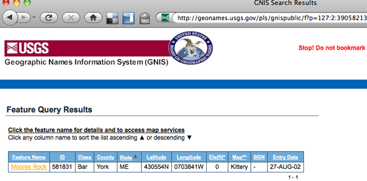
This is one of the screens that I put up from ERMA that shows the area of observed oil from an "over flight" and both an early vessel exclusion area and a later exclusion area that banned non-responder traffic from a huge area. These exclusion areas would be great things to send out using AIS binary messages using the Zone Message (other than the overly complicated geometry, which would take too many bits).
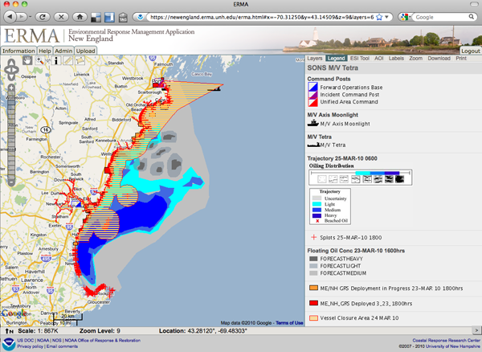
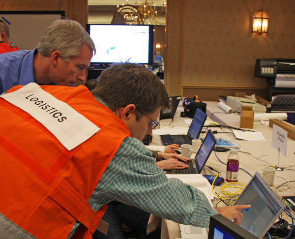
03.24.2010 15:01
UNH Manchester - Open Access and Open Content Thursday
Tomorrow (Thurs) at UNH Manchester...
come join the discussion.
Worldwide Collaboration through Technology Manchester, NH -- The Internet has provided a pathway to a global community where people can share information and ideas. In a new movement called Open Access and Open Content, educators are looking to the Internet as a means to share information and an opportunity to build on the knowledge of their colleagues and students. UNH Manchester will host a panel discussion on Open Access and Open Content in Education, on in the third floor auditorium. Offered as part of the Saul O Sidore Lecture Series: Living in a Digital World, a panel of experts will discuss how education can be improved by open access and open content and how resources, including lectures, learning modules, textbooks, research projects, and software tools, are moving toward online availability and are generating more interactivity and participation. The panel's topics include: The panel's topics include: * Future learning in a sustainable culture of free software, free standards, and free data * Open courseware and blogging by researchers and educators * Designing open virtual learning and research environments to support collaboration, build community, and ensure privacy * Benefits of open access to researchers, publishers copyright policies, author rights, and peer review * Balancing virtual technologies and human interaction The panel will be moderated by Mihaela Sabin, associate professor and coordinator of the computer information systems program. Panelists will include Jason Alexander, principal, Alexander Technology Group and board member of the NH High-Tech Council; Jon "Maddog" Hall, former executive director of Linux International; Kurt Schwehr, research assistant professor, Center for Coastal and Ocean Mapping; Sherry Vellucci, dean, UNH Dimond Library, and Robert Wolff, information technologist in the Library Systems Department, UNH Dimond Library.
03.24.2010 12:59
More images from SONS
A couple more images from SONS.
There is still a lot of use of paper and pencil...
A simulated press conference with ERMA in the foreground...
An ERMA display in use by some of the team.
DRILL -- SONS 2010 Exercise [NOAA's Incident News]
There is still a lot of use of paper and pencil...
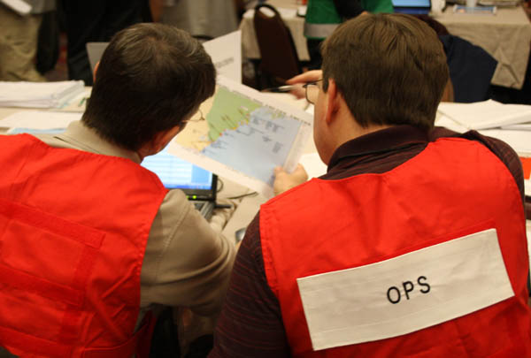
A simulated press conference with ERMA in the foreground...
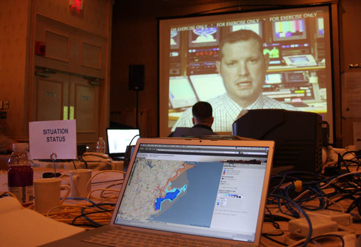
An ERMA display in use by some of the team.
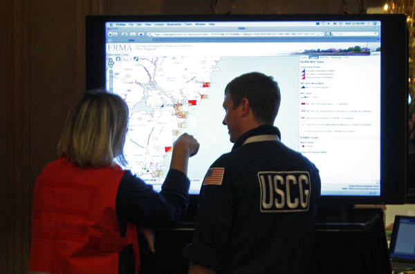
DRILL -- SONS 2010 Exercise [NOAA's Incident News]
03.24.2010 08:57
Start of SONS2010 day 1
Yesterday was training that I didn't
get to participate in. This morning, I got dropped into the middle
of things. I am not sure what I'm an observerving at this point. I
tried to grab some quick pictures right away.
The unified command gathering together:
The env team in deep discussions:
The unified command gathering together:
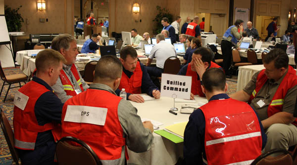
The env team in deep discussions:
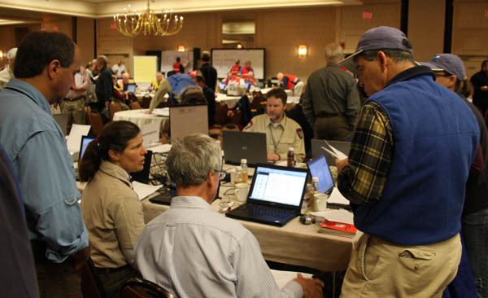
03.23.2010 20:56
SONS 2010 starts tomorrow
Tomorrow morning, I will be waking up
early and heading north to Portland, ME to participate as an
observer in the Spill of National Significance Drill. I helped
create the Environmental Response Management Application that will
be used in a part of the drill and is being respresented by NOAA's
Office of Response
and Restoration (OR&R)
The drill has a web page: www.sons2010.com
I expect we will hear more about the drill through gCaptain... SONS 2010 - Spill of National Significance Exercise in Portland, Maine; Day One
The drill has a web page: www.sons2010.com
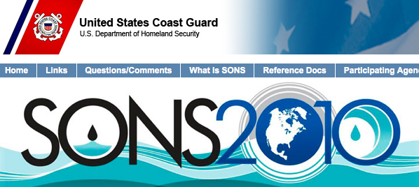
I expect we will hear more about the drill through gCaptain... SONS 2010 - Spill of National Significance Exercise in Portland, Maine; Day One
03.23.2010 20:43
Research Blog of the Year (not my blog)
This is an award that I'm never going
to win with the kind of science and engineering blogging that I do,
but it is interesting to see the winners.
Research blog of the year apparently goes to: Not Exactly Rocket Science. There is a geology blog in the picks... one of the few that I read: Highly Allochthonous
Research blog of the year apparently goes to: Not Exactly Rocket Science. There is a geology blog in the picks... one of the few that I read: Highly Allochthonous
03.22.2010 22:22
Spirit is driving like crazy on Mars
If you like robotic explorers, I hope
you are following Scott Maxwell's blog.
Opportunity Sol 412 (Spirit Sol 433)
Opportunity Sol 412 (Spirit Sol 433)
... we drove a total of 843m last week, according to Charles. Heck, I'll have to take his word for it -- I lost track. But this is just absolutely amazing stuff, so far beyond what we thought these machines were capable of that it almost seems unreal. We're now only about 650m from the next big target, a pair of craters called "Viking" and "Voyager." ...This was always the big research goal: be able to motor long distances to get to exciting new geologic targets. Robotic exploration is really the way to go for the forseable future. 219.7m! Right on! I have to say that I prefer Scott's blogging to the press release process. Perhaps that comes from being a part of the all night discussions on just how to craft particular press releases. Or maybe it comes from me from being a former robot driver (Marsokhod and Nomad in Chile). Yeah, I'm biased.
03.19.2010 14:19
Sensor data in GeoRSS?
Any
discussions can go here...
Chaoyi gave a go at publishing the CCOM weather (wx) station data in a GeoRSS and has brought up a number of issues. Line number referer to the example below (which we know is not right).
Example output from the OGC validator:
A shortened example with just one entry:
Chaoyi gave a go at publishing the CCOM weather (wx) station data in a GeoRSS and has brought up a number of issues. Line number referer to the example below (which we know is not right).
- The OGC Atom+GeoRSS validation results are confusing. Feed Validator has a better presentation
- It loosk like the OGC version only supports GML
- How should the payload be encoded? This is the big question. See line 24, where we make hard to parse human readable text.
- I think the ID is wrong, but it still not clear to me how id's should be handled.
- How many data points should be in the feed? If we are collecting a point every 12 seconds, do we want to just have 120 seconds of data? Do we need a realtime feed an one that is decimated? And if decimated, what is the "best" algorithm? I hate systems where you can't find out the actual algorithm used (Ahem! You know who you are!)
- Does anything actually pay attention to the syndication flags? We definitely need to have these match the data window (see previous point)
- And lots of other issues that escape me right now...
Example output from the OGC validator:
Validation for 'weather-short.xml': There were 3 validation errors: 1) Line 16, Column 14 - bad character content for element 2) Line 35, Column 70 - bad character content for element 3) Line 40, Column 12 - unfinished elementRemember that the example here is not meant to be a best practices example. The full xml: weather-try1-georss.xml
A shortened example with just one entry:
01: <?xml version="1.0" encoding="UTF-8"?> 02: <feed xmlns:dc="http://purl.org/dc/elements/1.1/" 03: xmlns:georss="http://www.georss.org/georss" 04: xmlns:sy="http://purl.org/rss/1.0/modules/syndication/" 05: xmlns="http://www.w3.org/2005/Atom"> 06: 07: <sy:updatePeriod>hourly</sy:updatePeriod> 08: <sy:updateFrequency>60</sy:updateFrequency> 09: 10: <title>Weather data from serial port</title> 11: <link href="http://sardine.ccom.nh:8080/weather-rss/weather-latest.georss" rel="self"/> 12: <id>http://sardine.ccom.nh:8080/weather-rss/</id> 13: <updated></updated> 14: <generator uri="http://schwehr.org/">Kurt Schwehr</generator> 15: 16: <entry> 17: <title>Weather read from serial port</title> 18: <author> 19: <name>UNH CCOM</name> 20: </author> 21: <georss:point>43.135947,-70.939432</georss:point> 22: <link href="http://sardine.ccom.nh:8080"/> 23: <published>2009-10-02T13:01:00Z2010-03-18T20:47:29Z</published> 24: <content type="html"><![CDATA[wind speed is 2.09, wind gust is 3.72, air temperature is 14.8 25: ]]></content> 26: </entry> 27: 28: </feed>
03.18.2010 15:32
Simili plot of the CCOM weather station
Chaoyi has put together a first draft
weather display using the MIT Simili Timeline
javascript library.
CCOM weather station in Timeline.
CCOM weather station in Timeline.
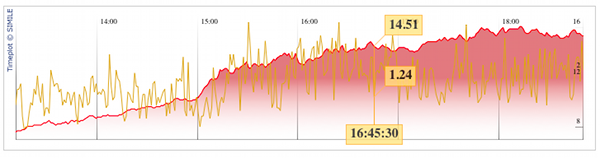
03.17.2010 17:29
USCG - SOA and LRIT
It's too bad that the USCG has to get
into Long Range
Information and Tracking (LRIT). Satellite based AIS (S-AIS)
makes LRIT pretty much pointless. LRIT sends a message from each
ship every 6 hours with very little information compared to AIS.
LRIT gives nothing back to the mariner. Too bad the US signed the
treaty. At least the cost of sending LRIT messages over satellite
are not paid by the mariners or vessel operators. LRIT is a legal
mess. AIS is just a public broadcast and much better for Maritime
Domain Awareness (MDA).
US Coast Guard Launches SOA Initiative with Fiorano SOA Platform [fcw.com - artical was removed from the website- Google Cache]
GAO urges review of ship-tracking plans [FCW.com April 2009] This review is still inprogress: Recommendations for Executive Action GAO
From the Full GAO report [58 pages]
If you read the fine print in the table, you will find that most of the information in the right hand column is coming from the Notice of Arrival (NOA). Let me summarize the table in my own way, with oldest technology of the left to newest on the right:
US Coast Guard Launches SOA Initiative with Fiorano SOA Platform [fcw.com - artical was removed from the website- Google Cache]
... One of the first projects implemented using the new infrastructure was its Long Range Identification Tracking (LRIT) system. Proposed by the USCG in the aftermath of 9/11 to enhance security, the Fiorano ESB powered LRIT system of the Coast Guard, helps track over 6,000 ships in US coastal waters, facilitating coastal security of America. ...SOA is Service-oriented architecture... using Enterprise Service Bus (ESB).
GAO urges review of ship-tracking plans [FCW.com April 2009] This review is still inprogress: Recommendations for Executive Action GAO
Recommendation: To ensure efficient and effective use of Coast Guard resources available for long-range vessel tracking, upon completion of the commercially provided long-range AIS concept demonstration and the national AIS strategy and after the cost of commercially provided long-range AIS information becomes known, the Commandant of the Coast Guard should determine the extent to which duplicate vessel-tracking information from LRIT and commercially provided long-range AIS is needed to accomplish Coast Guard missions, particularly in light of information already available through national technical means. Agency Affected: Department of Homeland Security: United States Coast Guard Status: In process Comments: When we confirm what actions the agency has taken in response to this recommendation, we will provide updated information.There is that phrase again... national technical means. Perhaps this is what they are implying by that phrase:
From the Full GAO report [58 pages]
... AIS provides extensive information but its use is limited to larger vessels while radar and video cameras, sensors that are located in some ports, provide limited information but can pick up varied vessels. Additionally, cameras can be affected by environmental conditions, unlike AIS and radar.Note, that AIS can track any size vessel if they carry an AIS transceiver, the transceiver working/configured correctly, and there a receiver that can see the transmissions.
If you read the fine print in the table, you will find that most of the information in the right hand column is coming from the Notice of Arrival (NOA). Let me summarize the table in my own way, with oldest technology of the left to newest on the right:
| NOA | AIS | LRIT | Total Data Types |
| 11 | 12 | 3 | 19 |
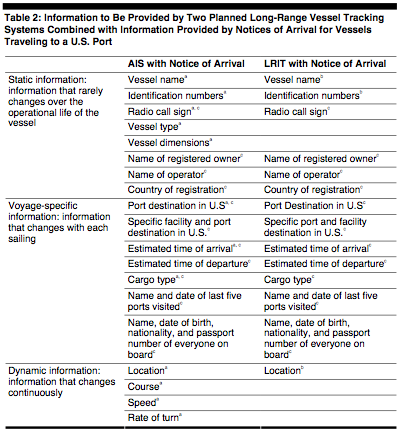
03.17.2010 09:04
Spill of National Significance (SONS) drill next week
Looks like I will be observing the
SONS drill on Wednesday next week in Portland, ME. It will be great
to see how ERMA and N-AIS are used in the drill.
Portland chosen for nation's largest oil spill exercise [USCG Mar 2009 announcement]
Covering the Spill of National Significance (SONS) Exercise [US Department of State]
Major disaster drill planned at sea [SeaCoastOnline]
Portland chosen for nation's largest oil spill exercise [USCG Mar 2009 announcement]
Covering the Spill of National Significance (SONS) Exercise [US Department of State]
Major disaster drill planned at sea [SeaCoastOnline]
... "It's basically an oil spill that blackens the Northeast. It is significant and it involves a lot of people," said Coast Guard Chief Petty Officer Jeff Hall of the District 1 Coast Guard in Boston, which is leading the drill's coordination. ... The exercise begins March 22 in Portland with two days of tabletop preparation. Ships will head out March 23 to approximate the accident and containment measures. The storm model used is actually the Patriots Day storm of April 2007, Hall said. ...
03.11.2010 11:30
Another big quake in Chile
Since I got asked where someone could
find the seismogram of today's 7.2 (smaller than the 8.8, but still
very big) quake in Chile, here is the record from a station in
Chile that I found through iris and
the Earthquake
View:
Station PLCA in Argentina.
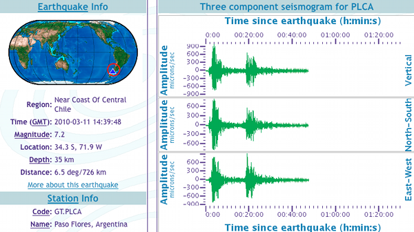
03.09.2010 13:57
ABE lost over the weekend
Art just sent me an email about the
loss of a WHOI AUV: ABE will
be missed. But with all AUVs, the risk of loss is a part of the
process. If you don't use them, then you will not loose `em.
News Release : Pioneering Deep-Sea Robot Lost at Sea [WHOI.edu]
The Autonomous Benthic Explorer, ABE, was lost at sea over the weekend, during a research cruise off the coast of Chile. ABE was a pioneering deep-sea exploration robotâÄîone of the first successful submersible vehicles that was both unmanned and untethered to surface ships. ...It's rough loosing an underwater vehicle, but we get over it and move on to the next great project with many lessons learned.
03.09.2010 09:48
Unknown vessels are a pain
Vessels like this are a real pain.
Someone was out off of Boston for a whole day in 2008 with a
miss-configured Class A AIS unit. Type 30 is a fishing vessel. This
vessel is not listed in the FCC register. This mmsi is still
floating around with a report on 2009-10-10 based on MMSIspace. However, this vessel still
has no name, IMO or callsign.
| MMSI | IMOnum | callsign | name | shiptype | dimA | dimB | dimC | dimD | draught | dest | cg_r | cg_timestamp |
|---|---|---|---|---|---|---|---|---|---|---|---|---|
| 338078447 | 0 | @@@@@ | @@@@@ | 30 | 6 | 3 | 3 | 3 | 0 | @@@@ | r003669946 | 2008-10-15 01:41:39 |
03.05.2010 17:16
Panoram display on the cheap
Roland and Colin setup the panoram
display in the vislab using 4 projectors. Roland got the display up
using static panoramas, GigaPan, and FlightGear.
Being that flight gear is based on open source toolkits, there is a good chance that we can hook our AIS feed to this and drive the ships around to match actual traffic.
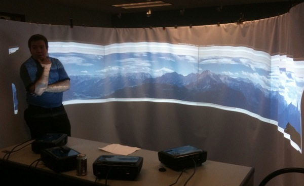
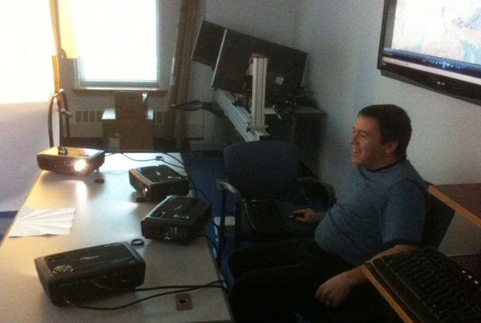
Being that flight gear is based on open source toolkits, there is a good chance that we can hook our AIS feed to this and drive the ships around to match actual traffic.
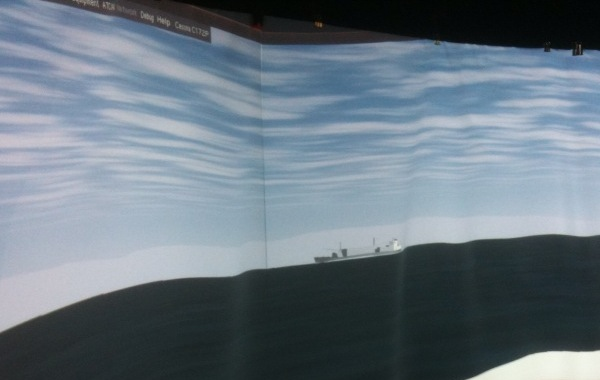
03.05.2010 09:37
Flash back to MER
Accidentially ran into a great blog
by Scott Maxwell who
has posted about his experiences work on the Mars Exploration
Rovers. Extra bonus that I appear in at least one of his posts. I
was working so many hours during MER, that I barely remember any of
it. 12-16 hour days were typical. Being able to read Scott's
adventure through MER is a real treat for people who just like
planetary exploration or robots and for those working on research
for robots and planetary exploration.
Spirit Sol 13
Spirit Sol 13
... Just as I arrive, I meet Kurt Schwehr, who asks if RSVP can produce animations. Boy, do I have great timing. It turns out that Kurt intends to record RSVP simulating the pre-egress turn, so that they can show it at the press conference. At the moment, he doesn't need our new feature where we write our animation to a file -- he's under time pressure and just wants to use the existing animation features, and just needs a little help figuring them out -- but he's interested in the new stuff and wants to hear more about it. Score! ...I spent a lot of time with RSVP on MER and even more on Phoenix.